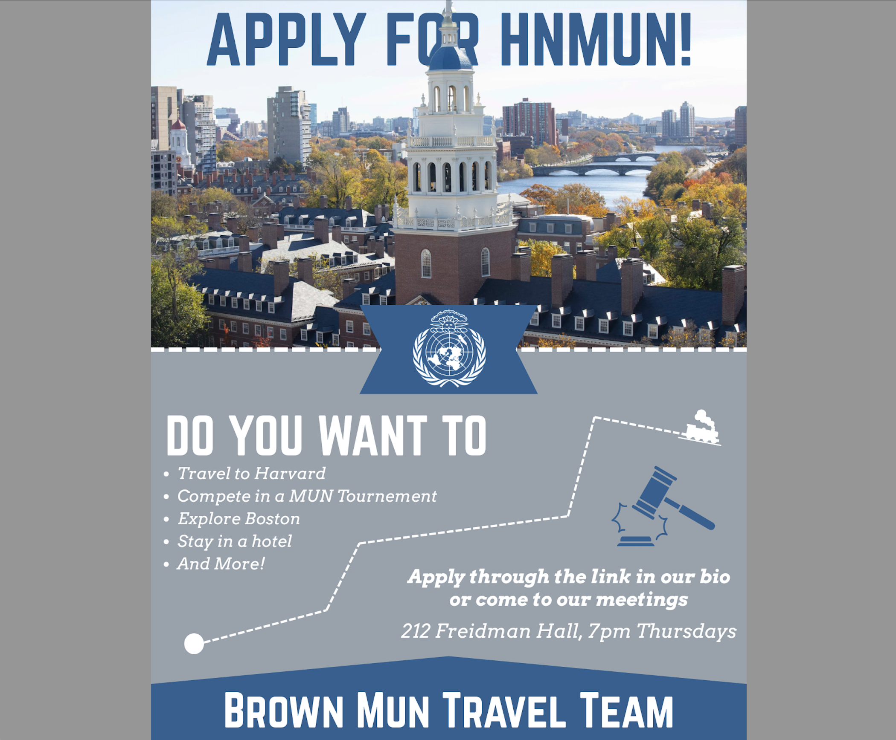
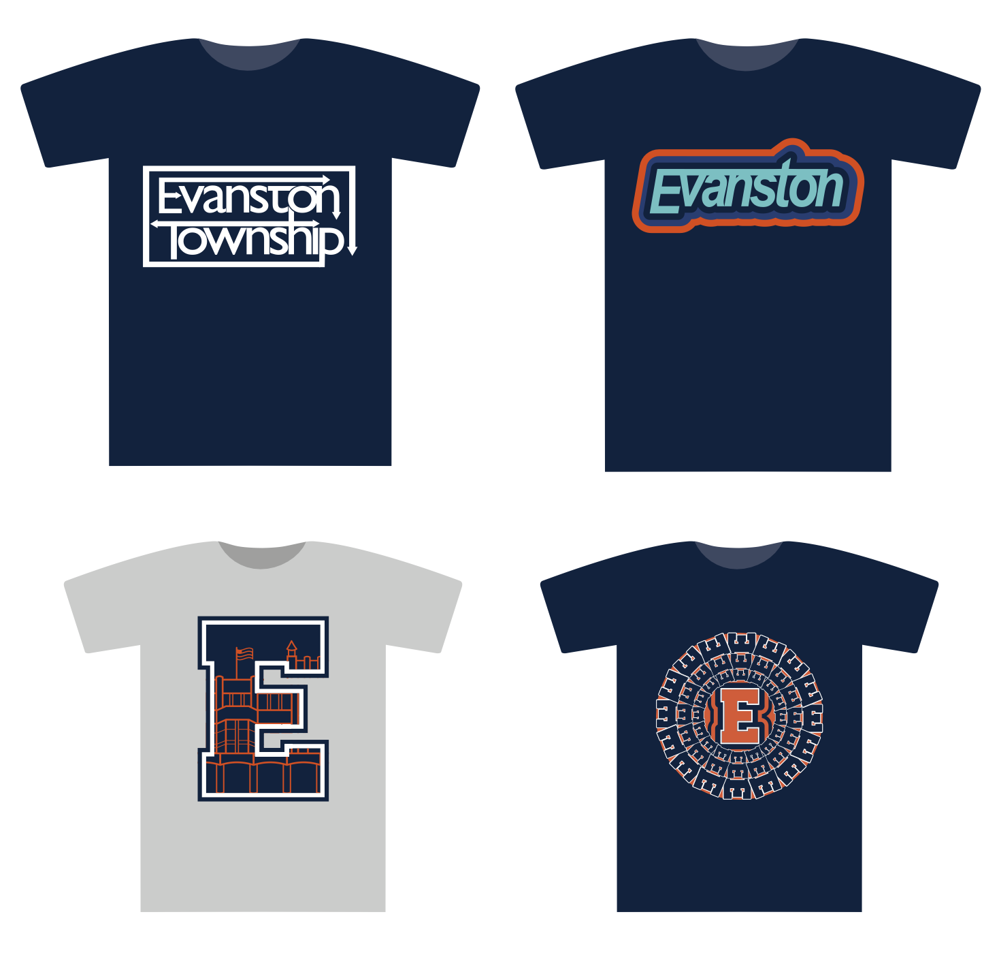

Tow Zone Alerts Iconography
Boston startup TZA needed a variety of designs: logos, icons, and marketing materials. The brand was going through its redesign; these icons made their website easy to navigate and markerting materials cohesive.
Design
I have extensive experience in design, ranging from marketing materials to social media to branding. Whether you are looking for an updated logomark, a new design language, or an eyecatching poster, my process will ensure you have a perfect design for your use-case.
First, we collaborate to understand what is unique and important to your brand. This means finding the colors, symbols, concepts, and message essential to what you do.
I take your inspiration and bring it to the drawing board. I create dozens of designs based on our conversation, and bring those ideas to life. Then, together, we choose our favorite designs to expand on.
After choosing the best, I bring them back to the drawing board, building an entire system on each of the concepts. Then, you choose the one that resonates with you most.
Boston startup TZA needed a variety of designs: logos, icons, and marketing materials. The brand was going through its redesign; these icons made their website easy to navigate and markerting materials cohesive.

The Brown Model UN team needed marketing materials to advertise their recruitment process. This was one in a series of posts to advertise their trips.

Evanston Township High School needed a variety of shirts to sell at their athletic events. These designs were pitched and discussed; ultimately, the bottom left "E" design was chosen and sold year-round at every fundraiser event.
If you have any design inquiries or are looking to start a new project, send me an email!
Email me